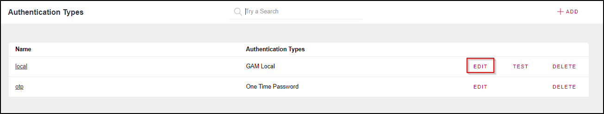
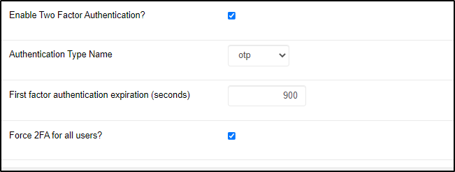
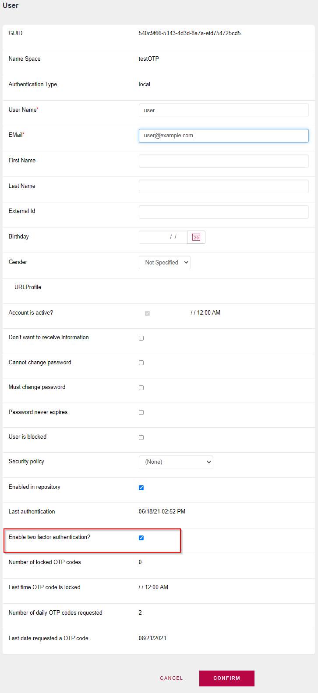

It is possible to authenticate and verify, in a second step, the user who is trying to log in. This is known as Two Factor Authentication (2FA), and 2 Step Verification (2SV).
2FA is commonly used when a password or username is entered and a second validation step is performed by sending an email or SMS as a way to mitigate brute force attacks.
The second factor authentication can only be One Time Password (OTP) verification, including OTP Custom.
To improve security, the user is required to validate twice before accessing. The first step involves entering a username and password, and the second step performs another validation (like the one mentioned before).
In both cases, in a web or mobile app, when the user has this functionality enabled, every time the user logs in has to follow two steps. This means that while logging in, the user has to successfully pass the second factor to keep logged on the app.
Two Factor Authentication can be configured with the following authentication types: OTP, Local, Custom, WebService, GAMRemoteRest.
In this example, Local Authentication is set as the first factor authentication, and OTP is the second factor authentication.
In order to use OTP only as second factor authentication, the checkbox "Use For First Factor Authentication?" must be kept unchecked.

In the edit form of Local Authentication, the check box "Enable Two Factor Authentication?" has to be selected.
In the "Authentication Type Name" Combo Box, choose the OTP that was added in step 1.
The checkbox "Force 2FA for all users?" is selected. This option sets 2FA for all the users in the application.

By selecting the checkbox "Force 2FA for all users?" in the first factor authentication, every user of the app is set with the "Enable two factor authentication?" checkbox selected.
If you do not select "Force 2FA for all users?", you must select the "Enable two factor authentication?" checkbox in the settings of every user that you want to use 2FA.

Besides the configuration shown above, 2FA properties can also be set in the GeneXus IDE. For this, you will have to refer to the properties by the following names:
Since GeneXus 17 Upgrade 5
| Backlinks | ||
| GAM - Two factor Authentication for mobile | GeneXus 17 Upgrade 5 | GeneXus 17 Upgrade 9 |
| Toc:GeneXus Access Manager (GAM) |